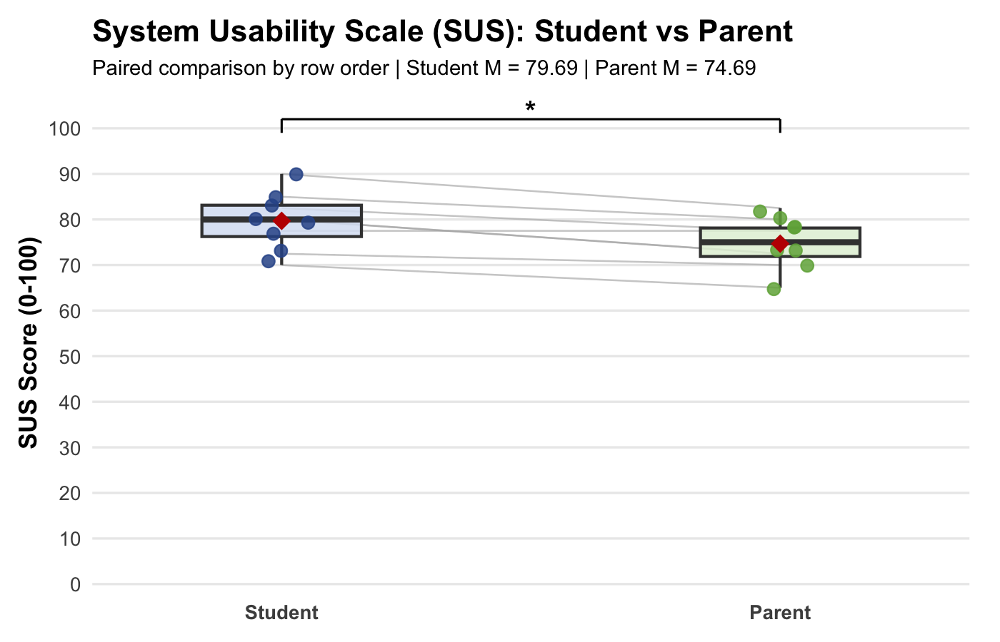
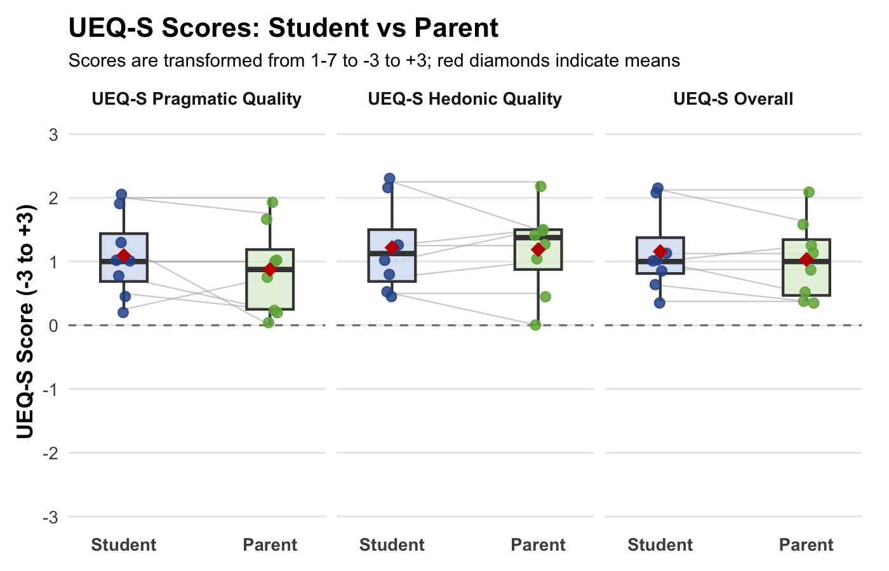
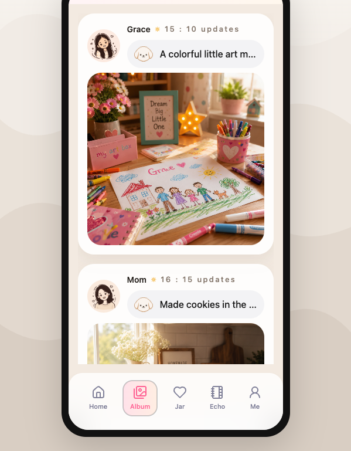
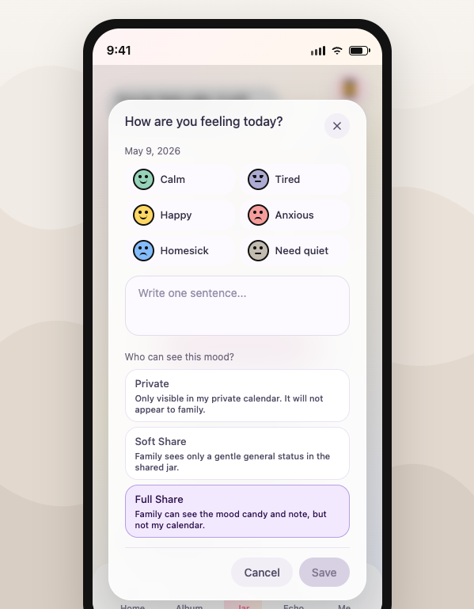
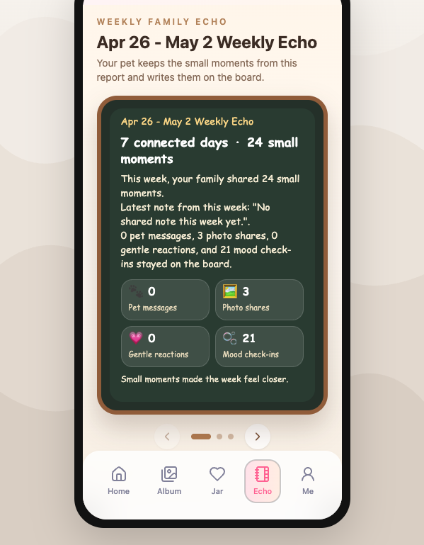

Phase 1
Week 1-8
Discover & Prototype
Research → Requirements → Ideation → Low-Fi → Early prototype
View Phase 1CPT208 Human-Centric Computing
Process PortfolioHome / Overview
A gentle playful space for low-pressure parent-child connection.
Phase 1
Research → Requirements → Ideation → Low-Fi → Early prototype
View Phase 1Turning Point
Tutor feedback challenged feature differentiation, AI authenticity, the virtual pet's role, and emotional risk.
View Turning PointPhase 2
User feedback → Product benchmarking → Revised directions → Function selection
View Phase 2Members

BEng Digital Media Technology
Portfolio / Research Synthesis / Benchmarking

BSc Information and Computing Science
User Interviews / Album Front-End / Backend

BSc Information and Computing Science
User Interviews / Jar Front-End / Backend

BSc Information and Computing Science
User Interviews / Weekly Echo Front-End / Backend
Contributions
This table summarises each member’s main contribution across research, design, implementation, and portfolio work.
| Member | Research / Content | Design / Prototype | Implementation / Testing |
|---|---|---|---|
| Duocan Li | Led portfolio structure and wording refinement; organised user research analysis; conducted academic and product benchmarking; contributed to user interviews and poster content. | Synthesised research findings into design requirements; supported concept comparison and design rationale presentation. | Constructed and optimised the process portfolio website; reviewed layout, readability, and portfolio evidence structure. |
| Chengcheng Hu | Conducted user interviews; contributed to research evidence collection and poster content. | Contributed to the Album interaction flow and visual presentation. | Implemented the Album front-end feature; contributed to backend implementation and system testing. |
| Leyi Liu | Conducted user interviews; contributed to research evidence collection and poster content. | Contributed to the Jar interaction flow and visual presentation. | Implemented the Jar front-end feature; contributed to backend implementation and system testing. |
| Xintong Wang | Conducted user interviews; contributed to research evidence collection and poster content. | Contributed to the Weekly Echo interaction flow and visual presentation. | Implemented the Weekly Echo front-end feature; contributed to backend implementation and system testing. |
Phase 1 / Week 1-8
This phase documents how we identified the problem space, studied target users, and translated research insights into playful requirements.
Why this track
Track fit: Relation between Generations
Project focus: Low-pressure emotional connection between university students and parents living apart.
Research gap
Existing tools often support messaging, safety awareness, or memory sharing separately. Kinlight focuses on the missing space between them: soft awareness, lightweight expression, and gentle conversation support for parent-student communication.
Stakeholders
Primary users: University students living away from home and their parents.
Secondary users: Wider family members who may later join shared family spaces.
Kinlight was developed for the Social Connectivity / Relation between Generations track because parent-student communication often becomes more fragile after young adults move away from home. In this situation, both sides may still want emotional closeness, but everyday contact can become difficult: students may feel pressured by frequent questions or long replies, while parents may worry that asking too much will interrupt or control their child. Existing communication tools support messaging, photo sharing, or family awareness, but they rarely focus on reducing emotional pressure in intergenerational communication. Kinlight therefore explores a playful, low-pressure, and asynchronous mobile experience that helps families maintain connection through lightweight sharing, soft emotional awareness, and easier conversation openings. Instead of making communication faster or more frequent, the project focuses on making contact feel easier to start, safer to control, and warmer to return to.
Research Gap
We compared 4 academic papers and 4 commercial products to identify unsupported user requirements in parent-student communication.
| Source | Did well | Missed | Kinlight implication |
|---|---|---|---|
| Shin et al. (CSCW 2021) | Maps technology-mediated parent-child relationship support; highlights relational complexity. | Not specific to university students living apart; no concrete lightweight mobile interaction. | Treat communication as relationship maintenance, not only messaging. |
| Shakeri et al. (CHI 2023) | Explains subtle presence and awareness after moving apart. | Does not fully resolve privacy, pressure, and awareness boundaries. | Support soft presence without turning awareness into monitoring. |
| Lee et al. (PACMHCI 2025) | Shows mediated prompts can start parent-child conversations. | Centres on music; less coverage of everyday sharing, mood reflection, or companion interaction. | Use prompts, but ground them in broader everyday family cues. |
| Wenhart et al. (CHI 2025) | Synthesises relatedness technologies and identifies fragmentation. | Does not provide a focused model for parent-student low-pressure contact. | Integrate emotional awareness, lightweight expression, and conversation support. |
| Familiar messaging, media sharing, voice notes, and quick reactions. | Not relationship-specific; can still create reply pressure. | Avoid becoming another chat app; create warmer entry points. | |
| Life360 | Supports family reassurance through safety and location awareness. | Can feel intrusive or surveillance-like for students. | Use abstract, consent-based awareness instead of tracking. |
| FamilyAlbum | Private family photo/video sharing and memory archiving. | Less support for everyday emotional connection or conversation repair. | Turn shared moments into low-pressure conversation openings. |
| Agapé | Uses prompts to support meaningful conversation when apart. | Not tailored to parent-student dynamics or Chinese family communication norms. | Make prompts contextual, editable, and relationship-appropriate. |
Kinlight should treat parent-student communication as a relationship-maintenance problem, not just a messaging problem.
Kinlight should support soft awareness and low-pressure presence, rather than only direct messaging.
Kinlight can use prompts as conversation starters, but should support broader everyday cues beyond one media type.
Kinlight should integrate relatedness support into a focused everyday system rather than adding isolated emotional features.
Kinlight should not simply become another chat app. It should reduce communication pressure and create warmer entry points for family contact.
Kinlight should avoid surveillance-style awareness and instead use soft, abstract, consent-based emotional cues.
Kinlight can borrow private family sharing, but should turn shared moments into low-pressure conversation openings rather than a passive album.
Kinlight should use prompts that are contextual, editable, and appropriate for parent-student communication.
Across the academic and commercial sources, we identified three recurring gaps:
Existing tools support contact, but not low-pressure emotional maintenance.
Messaging and sharing tools help families stay in touch, but they rarely reduce reply pressure or the burden of sustaining parent-student communication.
Prompt systems help start conversations, but are not tailored to parent-student relationships.
Prompt-based systems can open conversations, but they need to better fit autonomy, tone, and cultural expectations in parent-student communication.
Family awareness can reassure, but can also feel like monitoring.
Safety and awareness tools can comfort parents, but may create pressure for students when privacy boundaries are unclear.
Kinlight’s position: a low-pressure intergenerational communication system that combines soft awareness, lightweight expression, and gentle conversation support.
Stakeholders
Need: Stay connected with parents without forced long replies.
Risk: Family communication becomes another duty or interruption.
Kinlight response: Lightweight sharing, optional reactions, and privacy-aware emotional expression.
Need: Receive reassurance and maintain warmth without over-checking.
Risk: Care may be perceived as monitoring, pressure, or repeated questioning.
Kinlight response: Soft awareness, gentle prompts, and low-pressure care gestures.
Need: Maintain emotional connection across distance.
Risk: Contact becomes transactional, awkward, or overly problem-focused.
Kinlight response: Shared moments, weekly reflection, and supportive interaction rituals.
Need: Support possible expansion to grandparents, siblings, or wider family groups.
Risk: A design that only fits one parent-child pair may not scale to broader family contexts.
Kinlight response: Flexible family spaces and interaction patterns that can extend beyond the current scope.
Phase 1 / Week 1-8
This section translates user research insights into personas, journey-level pain points, and three playful design requirements.
The journey map summarises communication pain points between university students and parents living apart.

AI-assisted visual; content reviewed and adapted based on team interview findings.
Persona boards represent the two primary user groups: students and parents.

AI-assisted visual; content reviewed and adapted based on team interview findings.

AI-assisted visual; content reviewed and adapted based on team interview findings.
Semi-structured interviews, personas, and the journey map informed Kinlight’s 3 key design requirements.
This flow shows how interview evidence was translated into requirements rather than assumed by the design team.
Students and parents living apart
Reply pressure, timing mismatch, hard-to-start contact
Student and parent needs across distance
Low Reply Pressure, Flexible Timing, Easy to Start
Each requirement is grounded in repeated interview evidence rather than added as a decorative feature.
User Evidence
Students preferred quick acknowledgement and often avoided replying when a response felt too effortful.
Pain Point
Everyday contact can feel like a communication task, which increases reply pressure.
Design Requirement
Low Reply Pressure so users can respond lightly without composing a full message.
User Evidence
Parents and students often read updates at different times and wanted more control over when to respond.
Pain Point
Timing mismatch makes synchronous conversation difficult and can create hidden pressure.
Design Requirement
Flexible Timing so sharing and reassurance can happen asynchronously.
User Evidence
Both sides described silence after a few days because they did not know how to start naturally.
Pain Point
Starting contact can feel awkward when there is no clear opening or shared prompt.
Design Requirement
Easy to Start so contact begins from gentle prompts and lightweight shared moments.
(Playful Must-Haves)
Reduce the obligation to reply immediately or at length.
Derived from: students’ need for low-effort acknowledgement and reduced response pressure.
Later implemented through: Album
Support asynchronous sharing and responding at each person’s own pace.
Derived from: parents’ need for reassurance and students’ need for autonomy over when to respond.
Later implemented through: Jar
Lower the barrier to initiating conversation through gentle prompts and lightweight interaction.
Derived from: both sides’ difficulty starting natural conversation across distance.
Later implemented through: Weekly Echo
We conducted remote semi-structured interviews with target users. The screenshots document interview sessions, transcripts, and evidence collection. Personal details should remain anonymised where visible.


Phase 1 / Week 1-8
This phase shows how early ideas were generated, compared, and translated into early prototype flows.
Eight rapid sketches explored different ways to support low-pressure family connection before narrowing ideas through selection criteria.
8 early concepts
Selection criteria used:

Selected
Users privately drop a mood ball each day to reflect emotional patterns over time.
Selected: a gentle private check-in that later evolved into the Jar with clearer privacy controls.

Selected
Family members share small daily moments and respond through lightweight reactions.
Selected: it clearly supports low-effort contact and was later reframed as the family-specific Album flow.

Not selected
Family members log moods through color-coded daily entries.
Not selected: too explicit and likely to create monitoring pressure around emotions.

Not selected
A family tree interface links family members to messages, reminders, and prompts.
Not selected: the structure was novel, but the interaction focus was too diffuse for everyday use.

Not selected
A family chat interface supported by AI-generated quick replies.
Not selected: tutor and user feedback raised authenticity concerns around AI-written family replies.

Not selected
Family members co-create shared memories and reflections over time.
Not selected: meaningful, but too effortful for the lightweight rhythm Kinlight needed.

Not selected
Users chat with an AI-generated family persona that imitates a family member’s tone.
Not selected: interesting, but it introduced privacy and trust risks that felt too high.

Partially kept
A shared companion provides ambient emotional awareness through indirect visual cues.
Partially kept: the companion remained as a warm framing device, but not as the core interaction logic.
| Concept | User Need | Selection Rationale | Decision |
|---|---|---|---|
| Lightweight Sharing | Low-effort everyday contact | Feasible and easy to understand; needs family-specific framing. | Selected / revised |
| Gentle Topics | Easier conversation opening | Addresses “not knowing what to say”; prompts must feel contextual. | Selected / revised |
| Private Mood Jar | Private emotional reflection | Supports mood awareness while avoiding direct emotional disclosure. | Selected / revised |
| Shared Emotion Calendar | Long-term emotional awareness | Too explicit; may create monitoring pressure and reduce honest sharing. | Rejected |
| AI Family Persona Chat | Conversation support | Novel, but raises authenticity, privacy, and trust concerns. | Rejected |
| Collaborative Family Journal | Shared memory and reflection | Meaningful, but too effortful for lightweight everyday communication. | Rejected |
| Shared Companion Mood Indicator | Ambient emotional awareness | Warm, but its role was unclear and risked negative mirroring. | Exploratory / revised |
The design moved from divergent sketches to a clearer three-function system through successive prototype refinement.
4-stage progression
Crazy Eights opened the design space and surfaced alternative ways to support gentle family connection.
Selected ideas were translated into screen flow, information hierarchy, and lightweight interaction structure.
An early front-end prototype tested whether the core concepts felt understandable as a mobile interface.
Feedback and benchmarking consolidated the system into Album, Jar, and Weekly Echo.
These hand-drawn low-fidelity sketches show how the selected concepts were translated into early screen structure, interaction flow, and information architecture before being rebuilt as an interactive high-fi front-end preview.
3 early screens

Early structure
This sketch explores how users can share small daily moments and receive lightweight responses without starting a demanding conversation.

Flow exploration
This sketch explores how topic prompts can lower the barrier to initiating family communication.

Interaction detail
This sketch explores how private mood recording can support emotional reflection without turning feelings into direct family monitoring.
This Week 8 high-fi front-end preview demonstrates the three initial interaction flows before later feedback-driven refinement.
Week 8 prototype
Turning Point / Week 8
The Week 8 poster presentation became a design checkpoint for Kinlight. The feedback below is paraphrased from the tutors' comments and will guide our next round of reflection and iteration.
Is Lightweight Sharing clearly different from existing social media such as WeChat Moments?
Should AI write family replies, or should it only guide expression?
Is the pet only decorative, or does it provide affective support?
Could a sad or negative pet state create guilt, anxiety, or pressure?
Week 8 feedback became a turning point. We stopped treating Kinlight as three separate features and reframed it as a low-pressure intergenerational communication support system. The next phase uses user feedback and product benchmarking to refine this direction.
Phase 2 / Week 8-10
After Week 8, we used demo-based user feedback to test whether the tutor feedback also appeared in real user reactions.
| Finding | Evidence from users | Design implication |
|---|---|---|
| Sharing alone is not enough | Several users compared Lightweight Sharing to WeChat Moments or a simple “like” system. | Make sharing family-specific and conversation-oriented, rather than another passive feed. |
| AI should guide, not replace expression | Both students and parents were cautious about full AI-written family replies and preferred editable suggestions. | Use AI for prompt directions, tone guidance, and rewrite support instead of automatic emotional replies. |
| The pet’s role is promising but unclear | Users liked the pet’s warmth but were unsure whether it represented the individual, the family, or the relationship. | Define the pet as an affective mediator that supports care, reassurance, and repair. |
| Negative emotional feedback may create pressure | Students associated a sad pet with guilt; parents associated it with anxiety or self-blame. | Avoid sad, punitive, or diagnostic pet states. Use supportive and repair-oriented cues. |
| Privacy boundaries must be explicit | Students did not want parents to see detailed mood records; parents needed to know what was private or shared. | Keep detailed mood logs private and use only abstract, consent-based family awareness cues. |
| Parent-side guidance is necessary | Parents wanted to care but did not always know how to express concern without pressure. | Add softer parent-facing wording, care suggestions, or gentle next-step guidance. |
Year 2 daughter, contacts parents 2-3 times per week
Year 3 son, contacts parents about once a week
Year 1 daughter, frequent contact with mother, less contact with father
Mother, 45-50, wants to know child’s state without sounding intrusive
Father, 50-55, has fewer conversations with son and often only asks about study
Mother, 40-45, frequent contact with daughter but sometimes causes small conflicts
Round 1 feedback showed that Kinlight needed clearer feature differentiation, stronger privacy boundaries, and a safer role for emotional support. We therefore used product benchmarking to refine the next design direction.
Phase 2 / Week 8-10
After Round 1 feedback, we benchmarked related products and research prototypes to refine Kinlight’s feature differentiation, AI support, pet role, privacy boundaries, and emotional safety.
Benchmarking was used to refine—not restart—the design after users questioned feature differentiation, AI authenticity, the pet’s role, and privacy risk.
Shared moments need to become low-pressure conversation openings, not another passive feed.
AI should support authentic expression through directions and rewrites instead of replacing family replies.
The pet should support care, reassurance, and repair rather than simply display family mood.
Awareness should be abstract, consent-based, and emotionally soft rather than surveillance-style.
These benchmarking lessons informed the next concept-selection stage, where the team refined candidate directions before choosing the final three functions.
Phase 2 / Week 8-10
Based on the original three core functions, Week 8 tutor feedback, Round 1 user feedback, and product benchmarking, we reframed Kinlight into five candidate directions. These are not final functions yet. They will be used for the next selection stage, where the team will narrow them into three final functions for implementation.
The original three functions provided a starting point, but Round 1 feedback showed that they needed clearer differentiation, stronger emotional value, and safer privacy boundaries. We therefore expanded them into five more specific directions.
The five revised directions were treated as a design space rather than five separate end features. The next section shows how they were consolidated into three final main functions aligned with the three playful design requirements.
Phase 2 / Final Selection
After tutor feedback, user feedback, and benchmarking, we selected three final functions that directly implement the 3 key design requirements.
Evidence sources: Week 8 tutor feedback, Round 1 user feedback, product benchmarking.
Final Functions
Requirement
Reduce the burden of immediate or long-form replies.
Requirement
Support asynchronous contact at each person’s own pace.
Requirement
Lower the barrier to beginning or resuming family contact.
Primary requirement
Low Reply Pressure
Why selected
Turns everyday sharing into family-specific lightweight acknowledgement rather than another public-style feed.
Implemented as
Pet-carried notes, quick reactions, and recap cards.
Primary requirement
Flexible Timing
Why selected
Supports private emotional reflection while giving users control over what becomes family-visible.
Implemented as
Mood beads, sharing levels, private logs, and gentle care responses.
Primary requirement
Easy to Start
Why selected
Transforms scattered weekly activity into a natural conversation opening.
Implemented as
Weekly recap board, keepsake reveal, and light reflective prompts.
Requirement Mapping
| Key Design Requirement | Final Function | Design Response |
|---|---|---|
| Low Reply Pressure | Album | Low-effort reactions and family-specific sharing |
| Flexible Timing | Jar | Asynchronous mood reflection with sharing control |
| Easy to Start | Weekly Echo | Recap-based prompts for easier conversation opening |
Final Prototype / Guided Walkthrough
A screenshot-based walkthrough of the latest frontend, showing how Album, Jar, and Weekly Echo support the three official design requirements.
Walkthrough Scope
Frontend capture states and guided hotspots trace the latest Album, Jar, and Weekly Echo flow.
Album 📸 → Jar 🫙 → Weekly Echo ✨
Guided Screen
Click the blue glowing star to start.
Interaction Focus
User action
Design value
Prototype / Technical Implementation & Deployment
A compact summary of Kinlight’s confirmed final implementation status, system flow, and access routes.
A. Completion Status
Kinlight has completed full-stack development across the deployed frontend, implemented backend, and MySQL data layer.
Frontend
Public React / Vite interface available for the final demonstration build.
Backend
Express API and feature logic are implemented in the submitted source code.
Database
kinlight_dbPersistent data supports family posts, moods, items, rewards, and weekly summaries.
Repository
Repository is available now; setup documentation remains lightweight rather than fully expanded.
B. System Architecture
A simplified full-stack flow showing how user input becomes stored data and visible UI feedback.
kinlight_db)
Stores posts, moods, inventory, rewards, and weekly summary records.
User input moves through the frontend and backend into kinlight_db, then returns as updated shared moments, mood records, rewards, and recap feedback.
C. Core Feature Data Handling
Account / Family Context User identity and family membership provide the shared context for these feature flows.
User uploads posts or reacts to family updates. The backend stores post and reaction data, then the album refreshes with shared family moments.
User records a mood and optional note with a visibility setting. Stored mood entries then reappear through the jar and calendar as private or family-visible emotional records.
User claims or uses playful items. The backend updates daily drop and inventory state so the interface can show rewards, inventory changes, and room or pet feedback.
User views the weekly recap and claims rewards. Stored posts, moods, reactions, messages, and reward records are aggregated into a weekly summary and gift state.
D. Access & Reproducibility
Public frontend access is available now, while backend and database execution remain reproducible from the submitted source code.
Kinlight has completed full-stack development. The frontend is deployed on Vercel for public demonstration, while the backend and MySQL database are fully implemented and locally runnable from the submitted source code. Public backend deployment is not included because no external server was rented, and backend deployment was not required by the instructor.
Frontend Live Demo
Public Vercel deployment for the final frontend experience.
Source Code Repository
Submitted source code repository for the Kinlight project.
Backend & Database
Backend and MySQL database kinlight_db can be run locally from the submitted codebase.
Final Prototype / Evaluation / Reflection
Questionnaire results show the overall evaluation trend; interviews help explain user feelings and concrete refinement needs.
Student SUS
79.69
Above common SUS reference point.
Parent SUS
74.69
Positive, but lower than students.
UEQ-S Pragmatic
1.09 / 0.88
Students slightly higher.
UEQ-S Hedonic
1.22 / 1.19
Similar emotional appeal.
UEQ-S Overall
1.16 / 1.03
Positive for both groups.

Both groups rated Kinlight positively. Students gave a higher mean SUS score than parents, suggesting that the parent-facing experience still needs clearer guidance and lower interaction effort.

UEQ-S scores were positive for both groups. Hedonic Quality was almost identical between students and parents, suggesting that Kinlight’s gentle emotional concept was accepted by both sides.
Both students and parents rated Kinlight above the common SUS reference point.
Parent scores were positive, but lower than student scores.
UEQ-S Hedonic Quality was similar across groups.
Follow-up interviews were used to explain the questionnaire results and identify specific interface moments for refinement.
Some parents needed clearer explanations of what each action meant.
Design response: Add clearer onboarding and action labels.
Users valued lightweight reactions because they avoided long replies.
Design response: Keep quick reactions and non-chat-based interaction.
Mood information requires careful visibility control.
Design response: Keep detailed mood logs private and make sharing choices explicit.
Kinlight was positively received by both students and parents. The next step is to make parent-side interactions clearer and easier to navigate.
The evaluation suggests that Kinlight’s core emotional concept should be preserved. The next iteration should focus on parent-side usability: clearer onboarding, simpler wording, and more visible action cues.
Before the final evaluation, Kinlight had already gone through several design refinements based on Week 8 tutor feedback, demo-based user feedback, and product benchmarking. The comparisons below show how the early Week 8 prototype was revised into the final three-function system.
01
“This feels too close to a normal social feed, so its family-specific value needs to be clearer.”


From a general sharing feed to a family-specific album for low-pressure care.
User Feedback
Tutors questioned its difference from WeChat Moments, and users compared it to a simple “like” system.
Design Change
Album adds pet-carried notes, light reactions, and recap cards.
Reason
The final flow needed to feel like family care rather than another public posting surface.
Requirement supported: Low Reply Pressure
02
“Detailed mood visibility may create pressure, especially if parents can see too much.”


From visible emotional atmosphere to privacy-controlled mood sharing.
User Feedback
Tutors warned that negative pet states could create guilt, and users worried about parents seeing detailed mood records.
Design Change
Jar adds private mood logging and explicit sharing levels.
Reason
The design needed emotional reflection without turning family care into surveillance.
Requirement supported: Flexible Timing
03
“Prompt cards alone may feel generic if they are not grounded in real shared moments.”


From generic prompts to memory-based conversation starting.
User Feedback
Feedback raised concerns about inauthentic AI-generated replies, and benchmarking showed prompt-only systems may not sustain connection.
Design Change
Weekly Echo uses weekly recap, keepsakes, and light prompt chips.
Reason
Conversation openings work better when they emerge from real family traces collected across the week.
Requirement supported: Easy to Start
The final evaluation suggests that Kinlight is promising as a low-pressure communication system for students and parents living apart. However, designing for two generations requires clearer interaction boundaries: parents need guidance, while students need privacy and autonomy.
Future refinement should keep care visible without making interaction feel monitored, especially when mood information and family expectations overlap.
Technical Reflection
AI was used as a support tool for visual asset generation and front-end implementation. It did not define our user research findings, design requirements, or final design logic. All AI-assisted outputs were reviewed by the team and checked against Kinlight’s intended interaction goals.
P — Prompt
“Generate a cute Maine Coon cat in a lying pose, in pixel-art style.”
The context was that we had already created a white cat asset, so the new pet image needed to match the same visual style, posture, and warm tone used in the Kinlight interface.
O — Outcome
The AI generated a usable pixel-style cat image. The pose and visual mood were close to the existing asset, but the output still needed human checking for consistency, transparency, and whether it fitted the interface without distracting from the portfolio content.
A — Action
We reviewed the image manually, exported suitable versions as PNG assets, and reused similar prompt patterns to generate other pet images. Assets that did not match the UI style were discarded or regenerated. The images were used only as decorative interface assets, not as sources for design requirements.
P — Prompt
“Please help me modify the page effect after clicking the ‘Care for Someone’ button. The background should become blurred to highlight the feature card.”
The context was that the Jar page needed a clearer focus state when users opened the shared care view.
O — Outcome
The AI suggested a blur-overlay interaction and related front-end code changes. The proposal matched our intended interaction direction because it visually separated the active card from the background and made the care popup easier to notice.
A — Action
We adapted the suggested code into the front-end implementation, tested the click behaviour, and checked whether the blurred background still preserved readability and clear interaction feedback. After verification, we reused the same interaction pattern for other similar buttons to keep the interface consistent.
References
Keep academic references, tools, and AI citations transparent and easy to update throughout the semester.